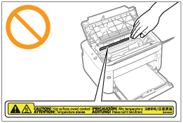

|
|
|
|---|
|
OSTRZEŻENIE
|
|
Podczas czyszczenia drukarki należy wyłączyć zasilanie drukarki i komputera, odłączyć kable interfejsu oraz wyciągnąć wtyczkę zasilania. W przeciwnym razie może dojść do pożaru lub porażenia prądem elektrycznym.
Należy regularnie wyjmować wtyczkę przewodu zasilania z gniazdka sieciowego i czyścić obszar wokół podstawy metalowych bolców wtyczki oraz gniazdo sieciowe za pomocą suchej ściereczki w celu usunięcia kurzu i brudu. W wilgotnym, zapylonym lub zadymionym miejscu, wokół wtyczki przewodu zasilania może nagromadzić się kurz, który następnie stanie się wilgotny, co może spowodować zwarcie i w efekcie pożar.
Do czyszczenia należy używać mocno wyciśniętej szmatki zwilżonej wodą lub rozcieńczonym wodą delikatnym detergentem. Nie należy używać alkoholu, benzenu, rozcieńczalników do farb ani innych łatwopalnych substancji. Kontakt substancji łatwopalnych z częściami elektrycznymi wewnątrz drukarki może spowodować pożar lub porażenie prądem.
Niektóre miejsca wewnątrz drukarki są pod wysokim napięciem. Podczas usuwania zaciętego papieru oraz podczas sprawdzania wnętrza drukarki należy uważać, aby nie dotknąć wnętrza drukarki naszyjnikiem, bransoletką ani innym metalowym przedmiotem, gdyż może to spowodować oparzenia lub porażenie prądem.
Zużytych kaset z tonerem nie wolno wrzucać do otwartego ognia. Toner pozostały w kasetach może się zapalić powodując poparzenia lub pożar.
Należy upewnić się, że po oczyszczeniu drukarki wtyczka zasilania i złącze zasilania zostały prawidłowo podłączone. W przeciwnym razie może dojść do przegrzania i pożaru.
Należy regularnie kontrolować kabel zasilający i wtyczkę. W następujących warunkach może dojść do pożaru, zatem należy skontaktować się z lokalnym, autoryzowanym przedstawicielem firmy Canon lub zadzwonić na infolinię firmy Canon.
Na wtyczce zasilania znajdują się ślady przepalenia.
Blaszka na wtyczce zasilania jest odkształcona lub złamana.
Zasilanie zostało wyłączone lub włączone podczas zginania kabla zasilającego.
Izolacja kabla zasilającego jest uszkodzona, pęknięta lub przebita.
Część kabla zasilającego nagrzewa się.
Należy regularnie upewniać się, że kabel zasilający i wtyczka nie są narażone na następujące warunki. W przeciwnym razie może dojść do pożaru lub porażenia prądem elektrycznym.
Złącze zasilające jest poluzowane.
Na kabel zasilający oddziałuje nacisk wywołany ciężkim przedmiotem lub wskutek przymocowania go za pomocą zszywek.
Wtyczka zasilająca jest poluzowana.
Kabel zasilający jest zwinięty w kłębek.
Część kabla zasilającego została ułożona w przejściu.
Kabel zasilający został ułożony przed urządzeniem grzewczym.
|
|
PRZESTROGA
|
|
Nie należy samemu przeprowadzać kontroli drukarki, za wyjątkiem czynności opisanych w niniejszym podręczniku. Wewnątrz drukarki nie ma części nadających się do samodzielnej naprawy przez użytkownika. Dostosuj tylko te elementy sterowania, które są opatrzone instrukcjami obsługi. Niewłaściwe dostosowanie może prowadzić do obrażeń ciała i/lub uszkodzeń wymagających skomplikowanych napraw, które mogą nie podlegać ograniczonej gwarancji.
 Zespół utrwalający i jego otoczenie wewnątrz drukarki nagrzewają się podczas drukowania. Podczas usuwania zaciętego papieru oraz podczas sprawdzania wnętrza drukarki nie należy dotykać zespołu utrwalającego i jego otoczenia, gdyż może to spowodować oparzenia.
Podczas usuwania zaciętego papieru oraz podczas sprawdzania wnętrza urządzenia nie należy wystawiać się na ciepło emitowane z zespołu utrwalającego i jego otoczenia przez dłuższy okres. W przeciwnym razie może dojść do niskotemperaturowego poparzenia, pomimo braku bezpośredniej styczności z zespołem utrwalającym i jego otoczeniem.
Jeżeli doszło do zacięcia papieru, należy usunąć zacięty papier w taki sposób, aby wewnątrz drukarki nie pozostał żaden jego fragment, zgodnie z wyświetlonym komunikatem. Nie wkładać rąk na siłę do części innych niż te wskazane na ekranie. Niestosowanie się do tych zaleceń może spowodować poparzenia lub obrażenia ciała.
Podczas wyjmowania zaciętego papieru lub wymieniania kasety z tonerem należy uważać, aby nie pobrudzić rąk ani ubrania tonerem. W razie pobrudzenia sobie rąk lub ubrania tonerem, należy natychmiast umyć je w zimnej wodzie. Spłukiwanie ciepłą wodą spowoduje utrwalenie tonera i uniemożliwi usunięcie plam.
Podczas usuwania zaciętego papieru należy uważać, aby nie dopuścić do rozsypania tonera na papier. Toner może dostać się do oczu lub ust. Jeśli toner dostanie się do oczu lub ust, należy je natychmiast przemyć zimną wodą i skonsultować się z lekarzem.
Podczas ładowania lub usuwania zaciętego papieru należy uważać, aby nie skaleczyć dłoni o krawędzie papieru.
Podczas wyjmowania kasety z tonerem należy zachować ostrożność, aby nie rozsypać tonera i nie dopuścić do dostania się tonera do oczu lub ust. Jeśli toner dostanie się do oczu lub ust, należy je natychmiast przemyć zimną wodą i skonsultować się z lekarzem.
Nie należy próbować rozmontowywać kasety z tonerem. Toner może się rozsypać i dostać się do oczu lub ust. Jeśli toner dostanie się do oczu lub ust, należy je natychmiast przemyć zimną wodą i skonsultować się z lekarzem.
W razie wysypania się tonera z kasety należy zachować ostrożność, by nie wdychać tonera, ani nie doprowadzić do bezpośredniego kontaktu ze skórą. Jeśli dojdzie do kontaktu tonera ze skórą, należy go zmyć używając mydła. W razie podrażnienia skóry lub wdychania tonera należy natychmiast skonsultować się z lekarzem.
|